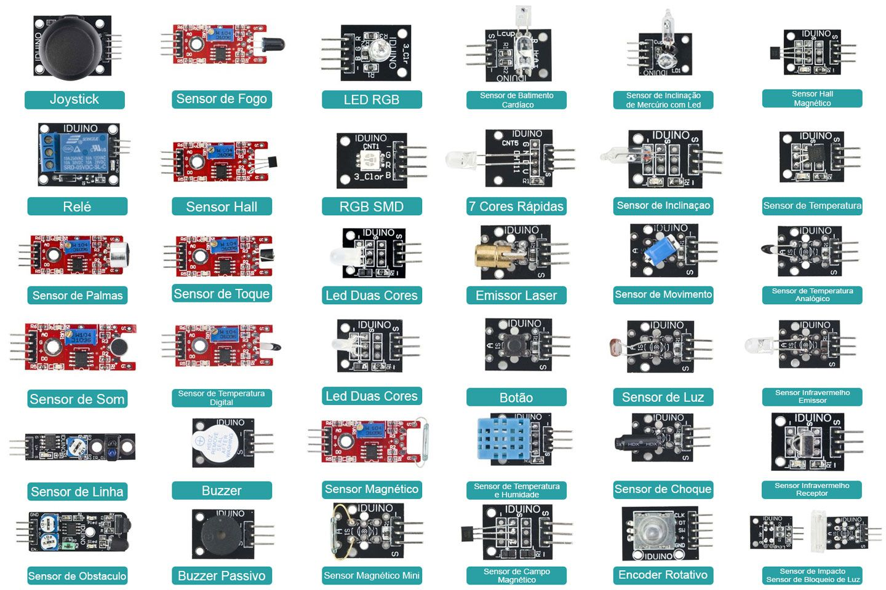

Prévia interativa · Projeto ProSUB · Thauan
Mundo Maker Feira de Exposição
Um passeio visual e interativo pelas 5 estações de ESP32-S3, NFC e 37 sensores. Veja como a sala vai ficar, o que cada equipe preparou e experimente as interações antes da montagem.
- 5 estações
- 5 equipes
- 37 sensores
- passaporte com selos
Ilustração da experiência — as cores identificam as cinco estações.
A visita
Como a feira funciona
A entrada, o passaporte e o caminho em U pelas cinco estações. Cada equipe recebe o visitante e conduz a interação.
-
Entrada
O visitante recebe o passaporte da exposição, uma folha A4 dobrada para coletar um selo em cada estação.
-
Circulação em U
As mesas ficam nas laterais e no centro, com um corredor livre. O percurso passa pelas estações 1, 3 e 5 e depois 2 e 4.
-
Interações e selos
Em cada mesa, o cartaz de título em suporte “L” e o “elevador” da equipe recebem o visitante, apresentam a mecânica e carimbam o passaporte.
-
Certificado
Quem completa as cinco estações recebe o Certificado de Explorador de Tecnologia.
Dica de ouro
O kit físico (ESP32-S3 + PN532) fica na Estação 2 — O Toque Mágico. A Estação 5 espelha o painel web desse mesmo ESP32 em um tablet, sem precisar de um segundo kit. As outras equipes usam simulações de papel e EVA.
Prioridade dos materiais
As quantidades oficiais são as do Material novo (20 itens). Os itens do Material Sugestão que não estão nessa lista aparecem como complementares na seção de materiais.
Planta da sala
Vista de cima da exposição
A parede/quadro com papel kraft, as cinco mesas e o espaço de circulação. Clique em uma estação para ver o resumo.
- parede / quadro com kraft
- mesa da equipe
- circulação em U
- entrada
A planta é uma referência visual do Material Sugestão, não uma planta métrica. Ajuste as distâncias ao espaço real da escola.
As cinco equipes
Conheça cada estação
Navegue pelas estações, veja como montar e experimente a interação que o visitante vai fazer.
Todas as estações em resumo
| Equipe | Estação | Tema | O que o visitante faz |
|---|
Estação 4 · Caixa dos Sentidos
Os 37 sensores do kit
Busque, filtre e veja a foto real de cada módulo do kit. O padrão é a foto; troque para desenho quando quiser conferir os pinos G-V-S. Cada carta traz três modos de uso.
placa azul = módulo (desenho) barra dourada = conector G · V · S Modo foto (padrão): imagem real do kit, sem os pinos destacados. Modo desenho: placa azul com os pinos G · V · S em destaque.
Ver a foto do kit completo (37 módulos)

Lista de material
Materiais e montagem de cada estação
Um guia por mesa: o que separar, como montar e para que a estação serve. O material de uso comum aparece uma vez, no começo.
Experiência do visitante
O passaporte da exposição
Na entrada, cada visitante recebe um passaporte de papel. Aqui você pode simular: colete os cinco selos explorando as estações e desbloqueie o certificado.